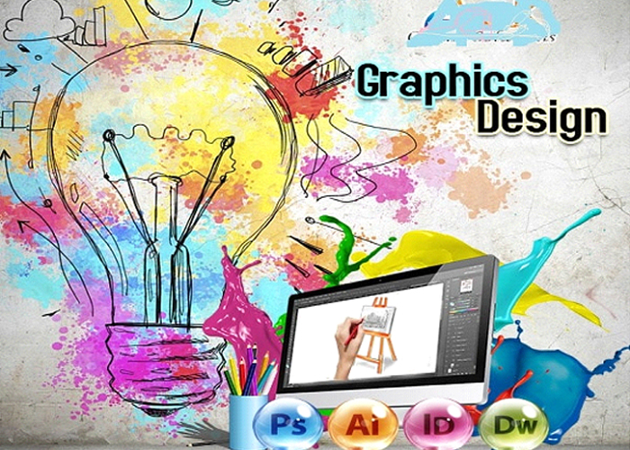

Best Courses After Engineering
To begin with, there are an innumerable number of career pathways you can take after completing your BTech degree. While MBA vs MTech is quite a relevant debate for Engineering graduates, there are many other conventional courses that you can choose from. Want to know which course to pursue after engineering? Here are the best courses after Engineering:
- MSc or MS
- MTech
- MBA
- Merchant Navy Courses/Exams
- Animation/VFX Courses
- Entrepreneurship Courses
- Game Designing Courses
PG Certificate Courses in IoT, Materials Management, Graphic Designing, Video Designing, etc.
Master of Science (M.Sc. or M.S.)
A natural and a well-chosen option, students mostly prefer doing Master of Science in their choice of specialisation, after their engineering. Students who have a preference for the technical aspects of things, opt for this course. The advantage in doing an M.S. is that other courses require certain years of work experience but there is no such requirement for doing an M.S. Doing your M.S. from abroad might speed up your chances to get a job outside the country. Getting a good score on your GRE, a good LOR and SOP should get you through to your dream college.
Some of the key specialisations for MSc degrees are:
- MSc Physics
- MSc Chemistry
- MS in Artificial Intelligence
- MSc in Computer Science
- M.Sc. in Applied Mathematics and Computing
- M.Sc. in Electronic Science
- M.Sc. in Electronic Science
- M.Sc. in Game Design and Development
- M.Sc. in Green Technology
Top Universities for MS/ MSc are-
| Universities |
Fees (INR) |
| Massachusetts Institute of Technology |
70 Lakh |
| Stanford University |
50 Lakh |
| University of California – Berkeley |
65 Lakh |
| University of Cambridge |
50 Lakh |
| Georgia Institute of Technology |
46 Lakh |
Reference Books:
Msc Book PDF - For all Semesters📖
Master of Technology(M.Tech)
A gradual transition from BTech., MTech is another option that engineering students explore as a course to do after engineering. Masters in Technology focuses deeply on the subjects taught during the under-graduation period. Students take up streams in which they have pursued their B. Tech to get a well-paying job in their desired field. The GATE examination is a must to get through to college offering an M.Tech degree. An MTech degree is achievable while doing a job too.
Take a look at the following specialisations you can opt for top MTech Courses:
- Electrical and Electronics Engineering
- Mechanical Engineering
- Environmental Engineering
- Chemical Engineering
- Systems Engineering
- Software Engineering
- Biomedical Engineering
As MS and MTech are likely courses that can be pursued after Engineering, almost similar universities offer MTech courses-
Top Universities for MTech are-
| Universities |
Fees (INR) |
| Massachusetts Institute of Technology |
70 Lakh |
| Stanford University |
50 Lakh |
| University of California – Berkeley |
65 Lakh |
| University of Cambridge |
50 Lakh |
| Georgia Institute of Technology |
46 Lakh |
Reference Books:
M.Tech Book PDF - For all Semesters📖
Master of Business Administration (MBA)
A popular choice amongst students these days, this course will give you all the polishing and skills required to take on the corporate world. Master of Business Administration (MBA) teaches business and managerial abilities and incorporates decision making and leadership qualities in the engineers. Writing the GMAT examination, helps you to go to other countries for your MBA, while CAT and other private university examinations help in securing a seat in the Indian Universities. This course is worth exploring after doing your engineering, in case there is an inclination to change your career path after engineering.
Here are the prominent MBA specializations:
- Human Resource Management
- International Business
- Information Technology
- Media and Communications
- Hospitality Management
- Healthcare Management
Top Universities for MBA are-
| B-Schools |
Fees (INR) |
| Harvard Business School |
80 Lakh |
| University of Pennsylvania: Wharton |
82 Lakh |
| Stanford Graduate School of Business |
83 Lakh |
| INSEAD |
67 Lakh |
| CEIBS |
44 Lakh |
Reference Books:
MBA Book PDF - For all Semesters📖
Post Graduate Diploma in Management (PGDM)
Post Graduate Diploma in Management (PGDM) offers a diploma in management as opposed to an MBA that provides a degree in the same. Even though they considered similar to each other, the syllabus differs for both the programs. While the MBA syllabus is more university pacifying, while this is not the case of PGDM. For most of the colleges, PGDM is more slanted towards industry-based learning, versus MBA that has a more theoretical approach.
Another good and rewarding course to consider after engineering.
Top Universities for PGDM are-
| Universities |
Fees (INR) |
| London Business School |
80 Lakh |
| University of Pennsylvania: Wharton |
82 Lakh |
| Harvard Business School |
80 Lakh |
| INSEAD |
67 Lakh |
| Stanford Graduate School of Business |
56 Lakh |
Reference Books:
PGDM Book PDF - For all Semesters📖
Merchant Navy/Armed Forces
There are other courses and career paths that one can trudge on after doing their engineering. Moving towards the merchant navy is one such example. But for pursuing a career in the Merchant Navy, it is mandatory to have a degree in either mechanical, electronics, electrical or marine engineering branches. After completing the B.Tech course in the above-mentioned streams, one can enrol in for the Graduate Marine Engineer (GME) or Electrical Technical Officer (ETO) course to get direct placement in a merchant navy vessel. Another example can be joining the armed forces, by taking up any of the following courses:
a. Technical graduate course (TGC)
b. Short service commission (SSC)
Reference Books:
NAVY/ARMY Book PDF - For all Semesters📖
Medical Courses after Engineering
If you want to pursue a medical degree at postgraduate level after BTech or BE, there is a plethora of specialisations available for you. Here are the top specialisations for medical courses after Engineering:
- Biomedical Engineering
- Biochemical Engineering
- Biotechnology
- Paramedical Courses
- Hospital Management
- Allied Health Courses
Non-Technical Options After Engineering
If you want to start your professional career right away after Engineering, however, in non-technical roles, then there are some exams which you can give. So, if you are thinking what to do after engineering in non technical capacities, then here is a list:
- Civil Services Exam
- ank PO
- Digital Marketing
- Development
- Stock Market jobs
- Consultant
- Investment Banking
- Work at the Central Bank: RBI Grade B, RBI Grade A, RBI Assistant, etc.
- Online Educator
- Photographer
- Corporate Communication Specialist
Management Courses After Engineering
For all those who are looking forward to attaining managerial level positions after BE/BTech courses, pursuing management courses after engineering can solve your purpose the best. Here are some trending management courses for you-
- Master of Business Administration (MBA)
- Masters in Management (MIM)
- Post Graduate Diploma in Management (PGDM)
- Master of Management Studies (MMS)
- Executive Diploma in Management
Game Designing
If you have always been ensnared by video games and are passionate about how meticulously the world of games gets created, then the game design is the field you need to explore. Under game designing courses after engineering such as a master’s in game development, you will get to know about how the idea of a game is conceptualised to how it is designed and brought to the audience. As the online gaming industry is flourishing in the current times, the demand for expert game designers and developers will only increase thus opting for a program in this specialisation can bring to a lucrative career with a fascinating creative side to it!
Reference Books:
Gaming Design Book PDF - For all Semesters📖
Animation/VFX/Graphic Designing

As the entertainment world is embracing more lively and incredibly designed graphics,animation courses after engineering can be another alternative for you. If you have interested in telling stories through moving graphics, then building a career in VFX and Animation can bring you to the centre of the media and entertainment world. Moreover, for those passionate about curating scintillating pictures, infographics, and visual masterpieces, graphic designing courses are also a must to explore.
Reference Books:
Graphics/VFX Book PDF - For all Semesters📖
Filmmaking
Another creatively inclined specialisation you can take for courses after Engineering, Filmmaking is surely an unconventional path but one that can give you an incredible chance to bring untold and incredible stories to the canvas of the big screen! There is a long list of filmmaking courses that you can choose from to explore different roles, be it scriptwriter, director, cinematographer, and so on. With your technical dexterity, you can enter the dynamic film industry, and combining it with your power of visualisation and storytelling, you can create eternal cinematic masterpieces!
Entrepreneurship
If you have always had a unique business idea but needed the right knowledge and acumen to turn into a success then, opting for a PG diploma or an MBA in Entrepreneurship can provide you with the requisite understanding and exposure. Engineers are always creative and innovative so if you don’t want to go the same-old path then there is always the chance to pursue your entrepreneurship dreams right after your graduation. Apart from these courses after Engineering, there are specialised programs to help enhance your entrepreneurship skills, such as the Entrepreneurship Development Program. It is advisable to have a sound educational background before plunging into the market.
Best Engineering Colleges in the World
| Universities |
Location |
Times Higher Education World University Rankings 2022 (Engineering) |
| Harvard University |
USA |
1 |
| University of Oxford |
UK |
2 |
| Stanford University |
USA |
3 |
| Massachusetts Institute of Technology |
USA |
4 |
| The University of California, Berkeley (UCB) |
USA |
5 |
| University of Cambridge |
UK |
6 |
| California Institute of Technology |
USA |
7 |
| Princeton University |
USA |
8 |
| ETH Zurich |
Switzerland |
9 |
List of Best Engineering Colleges in India
| Colleges |
Location |
| IIT Madras |
Chennai |
| IIT Delhi |
Delhi |
| IIT Bombay |
Bombay |
| IIT Kanpur |
Kanpur |
| IIT Kharagpur |
Kharagpur |
| IIT Roorkee |
Roorkee |
| IIT Guwahati |
Guwahati |
| IIT Hyderabad |
Hyderabad |
| NIT Trichy |
Tiruchirappalli |
| IIT Indore |
Indore |
| IIT Varanasi |
Varanasi |
| IIT Dhanbad |
Dhanbad |
| National Institute of Technology Karnataka |
Surathkal |